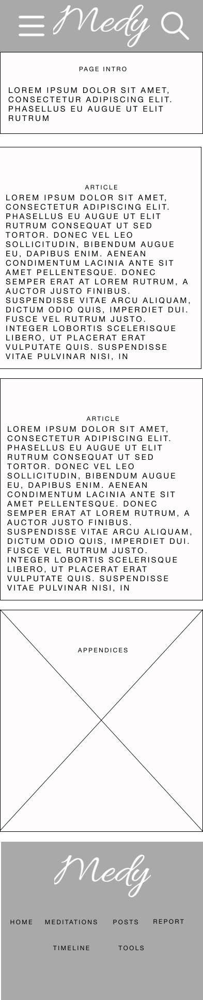
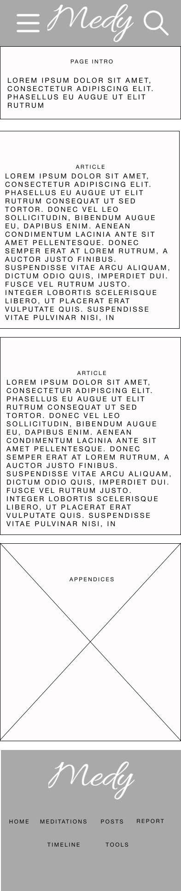

Introduction
What is the essential story being told by your site and what type of structure did you choose to implement?
Medy is a website meant to promote the practice and cultivation of living in mindfulness. The site serves as a hub for the latest information on mindfulness and highlights tools and tips to help cultivate the user's practice. Medy also highlights some of the talking heads in the mindfulness community. In this case, Thich Nhat Hanh is highlighted via a timeline page. Practitioners of all skill levels should be able to find functionality through the site's simple tools and guidance in the easy-to-digest information the site presents.
To achieve this goal, the site largely employs a simple and clean layout. The important information including articles, videos and tools, are encased in a visually distinct box to help focus the user on the item in question. Focusing on one thing is a key-element in practicing mindfulness; The site is built to reflect that idea. Medy's web pages will only have a maximum of a couple of unique items on the screen at one time. The site's tree is also simple and relatively shallow. The user should be only a couple of clicks away from all information on the website.
Inspiration
State 3 things that have inspired you when creating your website (e.g. guest speakers, websites, artists, blogs).
-
Thich Nhat Hanh appears in quite a few articles and has a whole page dedicated to his life. He is an important figure in my life and the main reason I practice mindfulness in my daily life. He passed away last year and while I don't have the luxury of going to Plum Village to remember his spirit, I felt that creating his own little space on this project was a nice touch for a website based on a practice he inspired within me. Selfishly, his incredible life story also aided in providing content for my timeline page.
-
The Website calm.com was another heavy inspiration for Medy. The way the website invokes a pleasant sensation and does not overbear the user was something I tried to encapsulate with Medy. Medy's background images, hover effects and tools were heavily inspired by calm.com. A lot of meditation sites are very simple with their presentation and calm.com perfectly encapsulates that. Medy is a large site, and calm.com helped to reference what the larger websites in the meditation community look like and how they interact with the user.
-
The website UCLA 100 was an inspiration for the timeline presentation. Medy needed to have great HTML and CSS, but it also needed great JavaScript and I wanted a whole page to be dedicated to using heavy JS. This website helped create the idea of a dynamic timeline for the user to scroll through and as the user progressed the background image was changed, and information was to fade in. UCLA 100 has a beautiful presentation, and it caught my eye as soon as I came across it in my research. The concept lends itself well to paying homage to Thich Nhat Hanh. It was a perfect find.
Accessibility
State 3 ways in which your site is accessible to those with different abilities and needs (for example those with visual impairment)
-
Standard accessibility web conventions were followed in the implementation of Medy. All images have alt tags, and clickable objects such as a tags and buttons have a clear separation from the surrounding content. This is to ensure that individuals utilizing screen readers can access the website and understand the visual aspects of Medy.
-
Medy's overall design is meant to be easily navigable and understood by a wide array of individuals. Clear heading hierarchy and well-labelled links help the user to find exactly what they are looking for. The simplistic design is also meant to highlight what the user should be focusing on to limit distractions. This again aids visually impaired individuals but also helps users who may have undeveloped web skills or live with ADHD. There should be fewer barriers to entry into the practice of mindfulness and Medy conveys a simple digestible website to aid in that goal.
-
Lastly, Medy maintains the ability to navigate all the important clickable objects on the site using just a keyboard. This means that even individuals who do not have access to a mouse can still use the website with ease. The site also ensures that the text size is easily readable, so users with visual limitations can navigate the site easily. The keyboard navigation is simple and intuitive, making it easy for all users to find what they are looking for on the site.
Usability
State 3 ways in which you considered the usability of your site.
-
Medy maintains a consistent design throughout its pages and through its responsive design. When a user visits one page, they can quickly infer how other pages will behave and allow this pattern to guide them to what they are looking for. This ensures the usability of the site never suffers from a potential learning curve. As it should be straightforward to understand the simplistic design and then navigate from there.
-
Medy follows standard website conventions. Items such as vertical scrolling, a small device drop-down menu and intuitive navigation are some usability features that users have come to expect from a website. Medy follows these standard conventions and employs these to meet its goal of being a simple and intuitive website. The user should spend time gaining actionable knowledge on mindfulness, not trying to understand how to navigate the website.
-
Lastly, Medy is meant to provide simple meditation tools. The user should be able to enhance their practice with some of the tools provided by the website. These tools have an intuitive design, and each tool serves a single purpose. This allows users to easily find the tool they desire and quickly dive into their practice. Users should be able to bookmark the tools page and get actionable results from the tools in less than a couple of minutes.
Learning
state 3 things you had to learn or find out to create your site. How did you achieve that?
-
Implementing JavaScript into the website came with several challenges. The largest challenge I overcame was the timeline pages' use of the intersection observer API. I liked the look of timelines that faded in and out and through researching how web developers got this functionality I came across the intersection observer API. Previous to this project I had no experience with this bit of functionality. However, through a quality video tutorial and some documentation on the API, I was able to implement a script that effectively faded the timeline articles in and out of the screen in an attractive manner.
-
Creating Medy's responsive design was another research-intensive task. I knew about media queries and the broad aspect of making a website responsive. However, understanding what was expected from this functionality eluded me initially. Items such as the viewpoint pixel breakpoints and the desired functionality of smaller screens vs larger screens eluded my understanding. Through case study research like calm.com and simple resources like the W3C, I was able to understand the expectations I personally had of responsive design and the guidelines official bodies recommend a web developer follow. For example, the smaller design of Medy has an interactive hamburger menu for the user to navigate the site. The look and feel of this menu is inspired by calm.com a website I personally visit.
-
Finally, Flexbox plays a large role in the design of the website. This is a very intuitive tool that allows for quick CSS styling and layouts. At the start of the project, it was a bit tricky to get my desired layout. Some points like the little sales blurb on the meditation webpage were holding me up. Through examples in the documentation, I was able to understand how the flex system works and manipulate it to easily layout Medy. It has blossomed an appreciation for this CSS tool that will carry with me through any web development projects in the future.
Evaluation I
What aspects of your work do you think were particularly successful? Why?
-
Medy's JavaScript implementation is something I think turned out well. The code on the timeline page makes the page very visually pleasing to interact with and it felt good to finally get it to function after researching for a while. The search function while probably not the greatest implementation of all time is something I am also very proud of. I think it serves the site well in its simple form and its implementation was done with little to no outside help. It felt really good to create the search functionality with my own skill set. The Tools also are exciting because I see myself actually using these. Creating useful tools with your own code is really fulfilling and I think the way JavaScript elevates this site is indicative of what a real site of this nature would provide.
-
The overall design of the website is also something I believe turned out successful. It's simple, intuitive and encapsulates a lot of what mindfulness is about. Users from all walks of life should be able to easily use this site to learn about mindfulness and to progress their practice. I believe this design would catch eyes upon arrival and aid in user retention. For this being my first large project I think the design went great and that is a good feeling.
Evaluation II
What aspects of your work could be improved? How might you do things differently another time?
-
I have a lot of positives regarding my JavaScript code. However, the functionality is not properly encapsulated. I was forced to create unique files for each page due to variable collision and loading errors. With my current skill set, I think it is okay. However, for a potential product, the code would need to be refactored and properly tested to ensure it behaves as expected. Classes could be utilized to help ensure certain functions are only fired when x event happens. Global variables could be reduced to ensure naming collisions do not happen. The website's data could be better encapsulated to allow the search function to search on all pages, not just the current one the user is on. For a lot of the JavaScript, it felt like I was kind of throwing spaghetti at the wall hoping it sticks and I don't think that is a sustainable skill set. In the future hopefully, an increased skill set and better planning can help ensure the JavaScript code is built in a strong object-oriented fashion with little code refactoring.
-
Medy's design is a product of producing the website on a two-screen system. When the website is on a smaller screen like a laptop it looks great. This is because most of my designing was done on a smaller screen. However, when you transition the website to a larger desktop screen the flexbox nature of the website enlarges the containers to a larger-than-desired size. This is due to the site's containers being based on percentages and the font widths being based on the viewport size. While not necessarily a bad thing in and of itself, it's clear I will need to properly restrain the website for larger devices. Items like TVs and super-sized monitors are easy to forget to design for because I don't personally browse the web on them. I believe a task manager like a Kanban board can help eliminate this issue by ensuring the site is tested against all possible use cases with checklists.
-
My pre-production design also needs to be touched up for future projects. I am so eager to get to the nitty gritty that it's easy to leave out effort for designing wireframes and mock-ups. This however can be the most important part. Developing the skill set to use a proper wire frame tool like Figma and learning proper design principles are two quality steps in ensuring my pre-production tasks are completed in an accurate efficient manner.
Resources
What resources did you use in your work? List any sources of information, libraries, plugins, code or tools (you should also indicate inclusions from other sources within your code using comments)
Please note code without explicit comments indicating it was taken from elsewhere is code I have written.
- imagecolorpicker.com 'Color matching help' [Online]. Available: https://imagecolorpicker.com/color-code [Accessed: 20-Jan-2023]
- calm.com 'Case study' [Online]. Available: https://www.calm.com/ [Accessed: 23-Jan-2023]
- unsplash.com 'Copyright free images' [Online]. Available: https://unsplash.com/ [Accessed: 23-Jan-2023]
- Web Dev Simplified, 'Learn Intersection Observer in 15 Minutes' 'Code inspired timeline.js code' 2022 [Video]. Available: https://www.youtube.com/watch?v=2IbRtjez6ag [Accessed: 24-Jan-2023]
- W3 Schools, 'Basic JavaScript Help' [Online]. Available: https://www.w3schools.com/ [Accessed: 25-Jan-2023]
- MDN Web Docs, 'Intersection observer help and general Javascript tutorials (Switch statements etc)' [Online]. Available: https://developer.mozilla.org/en-US/docs/Web/API/Intersection_Observer_API [Accessed: 27-Jan-2023]
- CSS-tricks, 'How to create an animated countdown timer (Code to help guide the countdown timer tool)' 2020. [Online]. Available: https://css-tricks.com/how-to-create-an-animated-countdown-timer-with-html-css-and-javascript/ [Accessed: 28-Jan-2023]
Site Map
Wireframes
index.html
meditations.html
posts.html
report.html
 
